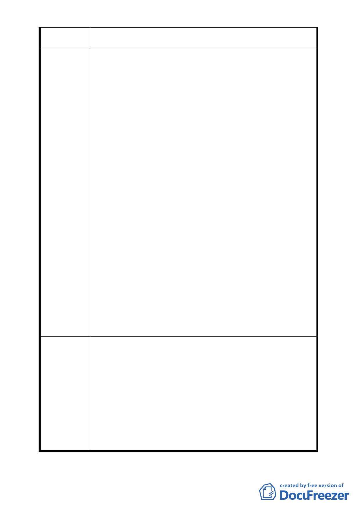

建議位置
文山區華興段一小段 260 地號等 32 筆土地及文山區華興段一
小段 252 地號等 26 筆土地
依 100.09.27 府都規字第 10035448700 號公告公開展覽「
變更臺北市文山區華興段一小段 253 地號等第一種商業區（
特）、第三種住宅區、市場用地及停車場用地為第一種商業區
（特）及第三種住宅區（特）細部計畫案」之計畫書內容，
劃定範圍僅納市有土地，並未考量緊鄰同一街廓之私有土地
之整體環境改善問題，為創造安全舒適的居住環境，建議緊
鄰劃定範圍之同一街廓土地（編號 B、C、H、F）等，應納
計畫整體規劃。
本次陳情緊鄰編號 B、C 之同一街廓內土地（文山區華興
段一小段 260 等 32 筆土地及文山區華興段一小段 252 等 26
筆土地），現況大抵為四、五樓之低樓層建築物，部分建物經
擴建道路就地整建後，亟需進行更新重建。近來已由熱心居
民發起都市更新整合作業中，於閱覽本次都市計畫變更內容
陳情理由
，期使本區環境改造能繼續推行，並與完工後公營住宅合為
一整體環境，特提出以下陳情意見：
一、 為求開發建築基地之完整性，建議陳情土地納 B、C 基
地整體考量：陳情土地扣除安康社區土地（為 303、253
地號）後呈 L 型基地，受限基地深度，難完善規劃。
二、 為求土地開發之公平性，建議容積率同編號 B、C 基地
變更為 450％：陳情土地使用分區同為住三及商一特（
原住三），現況大抵為四、五樓之低樓層建築物，亟需
進行更新，俾與未來公營住宅社區，形成完整的居住
環境。
三、 為能繼續推行本案更新重建，建議陳情土地以都市計
畫專案變更方式辦理更新重建時，排除開發強度達一
坪換一坪後，雖未達開發強度 2 倍法定容積上限，將
不得再給予額外獎勵容積之限制，以符合原住戶的期
望
一、 本案第一期開發基地（文山區華興段一小段318、582、
669、669-1、及670地號等5筆土地）變更第三種住宅
區、市場用地及停車場用地為第三種住宅區（特）先
予通過，建蔽率維持45％，容積率最高450％，其餘土
地使用項目、建築高度比、前後院深度比、側院寬度、
委員會決議
鄰幢間隔等悉依「臺北市土地使用分區管制自治條例」
第三種住宅區規定，案名併同修正。
二、 其餘地區為使計畫更斟完善以及減少後續執行疑義，
請都市發展局補充公共設施之承載量及交通衝擊分
析、全區都市設計準則、整體開發計畫，並考量周圍
街區共同開發的可行性後，再提會審議。
-6-